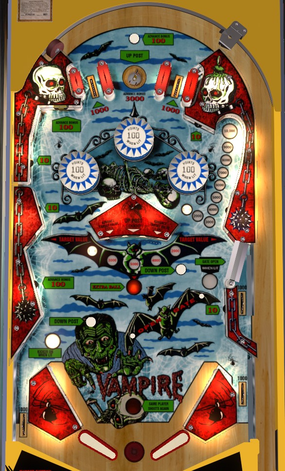

You're probably actually looking for Dracula (Stern Electronics, 1979) or Bram Stoker's Dracula (Bally Williams, 1993).
If the center post is down, hit the green center standup target to raise it. Hit the red center standup targets to rotate the "target value"- it can be up to 5,000 points- and when it is high, shoot the standup targets on the sides of the table. Extra ball and the left out lane kickback are lit randomly based on 10 point switch hits. The slings are a very dangerous place to be.
The bonus starts each ball at 1,000 points. Bonus is advanced by the top rollover button, the top saucer, the upper left standup target, and the wall switch in the lower left. To collect the bonus, shoot the upper right saucer; it's somewhat hidden underneath playfield plastic, but it's on the right where the bonus ladder is pointing. The saucer is the only way to collect the bonus; it is not awarded at the end of the ball. Collecting the bonus resets it back to 1,000 points.
The red standup targets in the center 3-bank score 100 points and rotate the lit target value on the playfield between 1,000, 2,000, 3,000, 4,000, and 5,000 points. The target value is collected at the middle left or middle right standup targets. The green standup target in the center bank scores 1,000 points and raises the center post between the flippers; it is also sometimes lit for extra ball based on 10-point switch hits.
The right gate just below the middle right standup target is lit by rolling over either of the two small Opens Gate rollover buttons in the lower right area of the table. The gate scores 3,000 points and allows the ball to fall back into the shooter lane for a replunge. Using the gate closes it.
The top pop bumpers score 10 points, or 100 when lit. The center bumper is always lit; only one of the two bumpers on either side is lit at any given time, alternating each time a 10-point switch is hit.
10-point switch hits govern when the center standup target is lit for extra ball and the left out lane is lit for an automatic kickback.
There are no in lanes. Flippers back up directly to the slingshots. Full size 3 inch flippers are used. Slingshots score 10 points. Out lanes score 1,000 points. There is a center post between the flippers that temporarily completely blocks off the center drain; it is raised by the top saucer and green center standup target, and lowered by the Down Post rollover buttons that are along the path to the middle left standup target and the bonus collect saucer. There is also an automatic kickback in the left out lane lit intermittently based on 10-point switch hits. The right out lane does not have any protection on its own; the gate/free ball lane is separate and situated above the out lane.